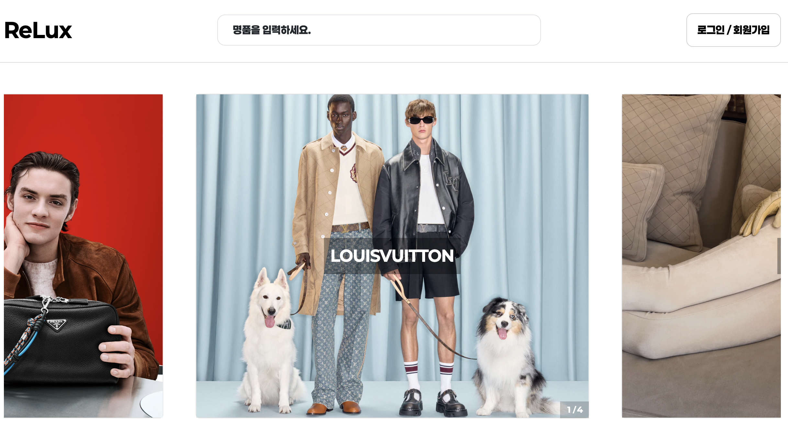
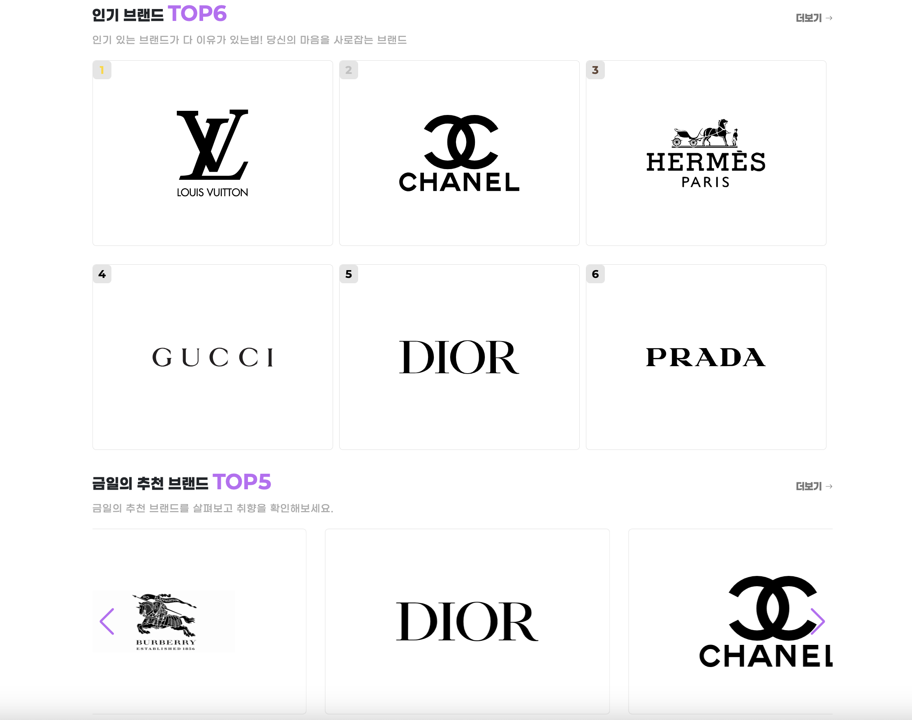
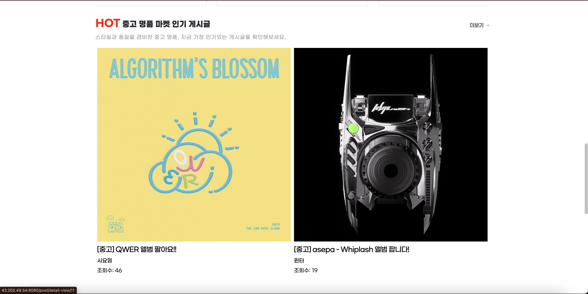

← 목록으로 돌아가기

Relux
Relux - 명품소개, 중고명품마켓을 통해 서비스 제공# 명품
# 개인프로젝트
# 명품중고마켓
# MySQL
# AWS
※ 사진을 누르시면 확대되어 보실수 있습니다.
  OverView.
이 웹페이지에서는 명품 브랜드에 대한 정보를 제공하고, 사용자들이 자유롭게 글을 작성하며 명품과 관련된 의견과 경험을
나눌수 있도록 구현 했습니다.
다양한 명품 브랜드의 소개와 트렌드 정보를 한눈에 볼 수 있는 기능을 개발했으며, 연령대별 추천 상품도 확인할 수 있도록
구성하여 각 연령층에 맞는 스타일과 브랜드를 쉽게 찾을 수 있도록 했습니다.
Project Results.
Relux는 웹 개발 실력을 향상시키고 백엔드 기술을 실제 프로젝트에 접목하기 위해 만든 럭셔리 소개 홈페이지 입니다. 프로젝트를 통해 사용자 경험(UX)과 기술적 구현 사이의 균형을 맞추는 것이 얼마나 중요한지 배울 수 있었습니다. 플랫폼은 스프링 부트와 AWS 클라우드를 활용해 배포되었으며, 실제 배포 환경에서 발생한 성능 이슈를 해결하면서 배포와 유지보수의 중요성도 체감할 수 있었습니다. 프로젝트를 통해 단순히 기능 구현만이 아니라, 사용자의 입장에서 지속적으로 개선해 나가는 과정의 중요성을 배운 값진 경험이었습니다.
Work Info.
- 제작 기간24.09.27 ~ 24.11.03
- 제작 영역Relux 모든영역 (UI/UX 디자인, 프론트엔드 퍼블리싱)
- 작업 환경MAC OS
- 사용 툴SpringToolSuite4, Postman, Figma
- 사용 언어HTML5, CSS3, JAVA, JavaScript
- 핵심 기능글 작성 및 댓글 기능, 기능에 맞는 데이터가 동적으로 로딩
- 깃허브https://github.com/bp4sp4/ReLux
- 피그마Relux Design Link
- DB ERDDB ERD Link
- 배포 환경AWS EC2, Apache Tomcat, MySQL
- 임시 계정ID : user001 PW : user001!